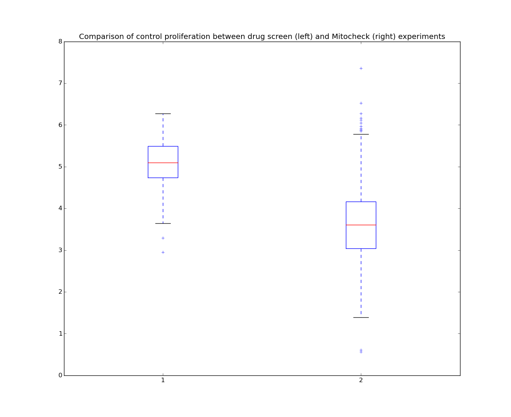
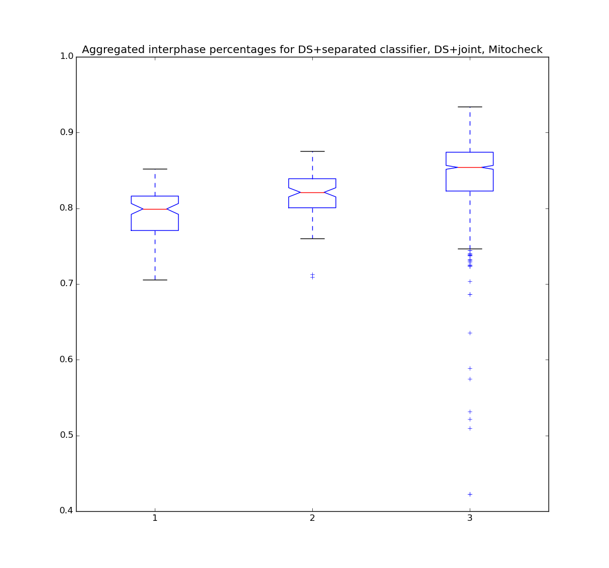

We have noticed that appliction of the mitocheck-classifier seems to be sub-optimal. Therefore, I train a new classifier on the drug data.
First, I had to select the movies. This was done with the help of the plate views on plateview
There I selected spots for different drugs, some spots with no or little effect (including also empty), most spots however with either medium or strong effect. The objective is to avoid missing interesting morphologies. Altogether, I selected 28 conditions, all with 2 fields (56 movies). Each movie was selected in triplicates (from labteks LT0900_01, LT0900_02, LT0900_05).
There were several technical issues.
First, the channel naming varied with the plate (either Cy3 or b_cy3). I therefore renamed, so that the channel is now always Cy3. This is done with the script src/rename_files.py
Second, there is sometimes a high background. In principle, this does not hurt for the segmentation, as the background is removed. But CellCognition does a conversion to 8bit images, which is the same for all movies. Consequently, images with a high background might actually experience a reduction of the dynamic range. I therefore subtracted the offset of all images by subtracting the 5%-percentile from each image src/offset_correction.py
I annotated morphologies, from these movies. Several observations:
This rises a number of questions.
Regarding question (1), I think that both alternatives can be tested. For this, I built a classifier with only those morphologies that were actually present in the drug data set (2420 nuclei). This is the corresponding classifier (I removed the image data from version control): cecog_classifiers/classifier_2016_08_10_only_observed_classes.
This is in any case a working solution. The kidney class can be either removed or joined with polylobed or interphase, or maintained in the drug-screen data and not in the mitocheck data set. As a matter of fact, we could argue that this kind of situation is typical when comparing screens, and that the EMD allows us to compare profiles with different classes, as long as we can define a cost matrix between the classes.
In order to build a joined classifier, I wrote a script that joins two arff files: src/join_classifiers.py. The script is now running, and a joint classifier has been trained: cecog_classifiers/res_join. The training phase for this classifier is relatively long due to the large number of samples.
Finally, we have to decide, what to do with the kidney-shape class. My feeling is that if we find a new class in the mitocheck data and if this class allows us to find the molecular targets of this drug, this will be a strong argument and a nice result. But there are many "ifs": it might be that this morphology will actually introduce more problems than benefits. I think we can take the risk and look what's coming out.
There are also still some technical issues related to the compilation on the cluster: the system has been updated, and at the moment cellcognition does not run because of several dependencies. I re-compiled qt and PyQt. At the moment I am blocked by lxml (for which I need the assistance of IT).
The following issues have been settled:
The original drug data can be found here: /share/data40T/aschoenauer/drug_screen/data_offset_corrected As mentioned earlier, this data is offset-corrected and renamed.
I finally managed to start everything on the cluster. For this, I have removed the PyQt4 installation. I noticed, that a cecog-installation depending on PyQt4 exists inside the site-packages (installed by Xiwei), which cannot be removed by me, as I do not have the permissions. So, it is important to set the PYTHONPATH properly. This has been modified in all sh-scripts (see below).
Done the tests for comparing proliferation: significantly different according to KS and Wilcoxon rank-sum tests, ie control proliferation values from the DS experiments do not come from the same distribution as those from the Mitocheck experiments. This is at least something to know, although it does not mean that the rest is bound to fail.
If I look at the percentages of interphase at the beginning of experiments or the end, using the separated classifier for DS experiments, it is not really better, for example at t=48h:
In [97]: ks_2samp(ds_interphasee, mito_interphasee[:len(ds)])
Out[97]: Ks_2sampResult(statistic=0.40404040404040403, pvalue=1.0206950980453439e-07)
In [98]: ks_2samp(mito_interphasee[-len(ds):], mito_interphasee[:len(ds)])
Out[98]: Ks_2sampResult(statistic=0.090909090909090912, pvalue=0.78901374540865998)
or t=0:
n [77]: ks_2samp(ds_interphase, mito_interphase[:len(ds)])
Out[77]: Ks_2sampResult(statistic=0.31313131313131315, pvalue=8.3404989489022121e-05)
In [78]: ks_2samp(mito_interphase[-len(ds):], mito_interphase[:len(ds)])
Out[78]: Ks_2sampResult(statistic=0.15151515151515149, pvalue=0.18845568511626737)
It seems better using the joint classifier (from p-values 10^-7 to 10^-4), though still significantly different. The Wilcoxon rank-sum test seems lest stringent.
I choose to look at the results of using the Mitocheck classifier on the DS experiments (indeed we hadn't done any tests). Restricting myself to aggregated interphases,
it is not statistically significantly different from using the joint classifier. But the distribution is not the same than that of Mitocheck control experiments.

If we have less interphases in the DS controls and the proliferation there is higher, I would say that the difference is therefore that there are more mitotic phenotypes in DS controls.
If I look at the phenotypes there should be more anaphases, metaphases and prometaphases. This is correct, but does not explain all the differences: there is approximately twice as many
mitotic phases in the DS than in Mitocheck but it is not enough to compensate for the difference. I look at Kidney, apoptosis: this seems like an endless quest which can be summarized by
fact that the classifications were realized with a different classifier. Now. The idea is to look at Mitocheck controls which have already been computed using the joint classifier: do we still
get that?
Indeed we do: let us investigate how each phenotypic class is represented in controls from DS and Mitocheck experiments. Here are the mean percentages over the whole movie (ie,
aggregated data) for each phenotypic class using the joint classifier, respectively for DS and Mitocheck experiments:
Interphase 0.819165420184 0.722449957794
Artefact 0.03173882151 0.0426910468146
Prometaphase 0.0131205009216 0.00536043444377
Grape 0.00495739132674 0.000731442059825
Metaphase 0.009350975884 0.00690633688488
Apoptosis 0.00540172419196 0.0120680089453
ADCCM 6.98284091886e-05 0.000809520079249
Folded 0.000676337182389 0.00431211612777
Focus 0.00151579060649 0.03098032268
Large 0.00794003542958 0.00962848565439
Binucleated 0.00692017149368 0.0891532008123
SmallIrregular 0.00128074001242 0.014103716939
Kidney 0.0413329361264 0.00155639172893
Polylobed 0.0204667768705 0.0188442742433
Hole 0.000292390851477 0.000973719038307
Anaphase 0.0234266377098 0.0179796640158
MetaphaseAlignment 0.00310661056638 0.00301602570327
Elongated 0.00923691072363 0.0184353360356
So on the one hand there are more interphase and kidney nuclei in the DS controls, on the other hand this is compensated by more out of focus, binucleated and small iregular
nuclei in the Mitocheck controls. We do have more mitotic nuclei in the DS controls than in the Mitocheck controls but this is not the main effect. Therefore, it does not seem
that the Mitocheck and DS experiments are directly comparable...
| Phenotype | DS ctrls | Mitocheck ctrls + old | Mitocheck+joint |
|---|---|---|---|
| ADCCM | 0.01 | 0.11 | 0.08 |
| Anaphase | 2.34 | 1.68 | 1.80 |
| Apoptosis | 0.54 | 1.41 | 1.21 |
| Artefact | 3.17 | 0.45 | 4.27 |
| Binucleated | 0.69 | 0.00 | 8.92 |
| Polylobed | 2.05 | 0.00 | 1.88 |
| Shape1 | 0.00 | 3.76 | 0.00 |
| Shape3 | 0.00 | 2.72 | 0.00 |
| Elongated | 0.92 | 0.63 | 1.84 |
| Focus | 0.15 | 0.84 | 3.10 |
| Folded | 0.07 | 0.32 | 0.43 |
| Grape | 0.50 | 0.07 | 0.07 |
| Hole | 0.03 | 0.10 | 0.10 |
| Interphase | 81.92 | 84.43 | 72.24 |
| Kidney | 4.13 | 0.00 | 0.16 |
| Large | 0.79 | 1.05 | 0.96 |
| Metaphase | 0.94 | 0.70 | 0.69 |
| MetaphaseAlignment | 0.31 | 0.40 | 0.30 |
| Prometaphase | 1.31 | 0.50 | 0.54 |
| SmallIrregular | 0.13 | 0.75 | 1.41 |
| UndefinedCondensed | 0.00 | 0.07 | 0.00 |
What I think is doable is to characterize each condition by the Mann-Whitney U statistic to the controls of the same plate, for each phenotype. There are 7 controls per plate for Mitocheck whereas there are 33 controls per plate for the drug screen, so this needs to be taken into account when doing the statistics. It has the advantage over other tests that it is one-sided, hence we retain in the statistic whether there are more or less of a given phenotype in the experiment.
My idea is to start by looking at Mitocheck selected wells as in my PhD thesis. I add a script to search if there are wells with extra kidney nuclei in the rest of Mitocheck.
We can still use the transportation distance if we would like to look for a clustering of drug screen conditions.